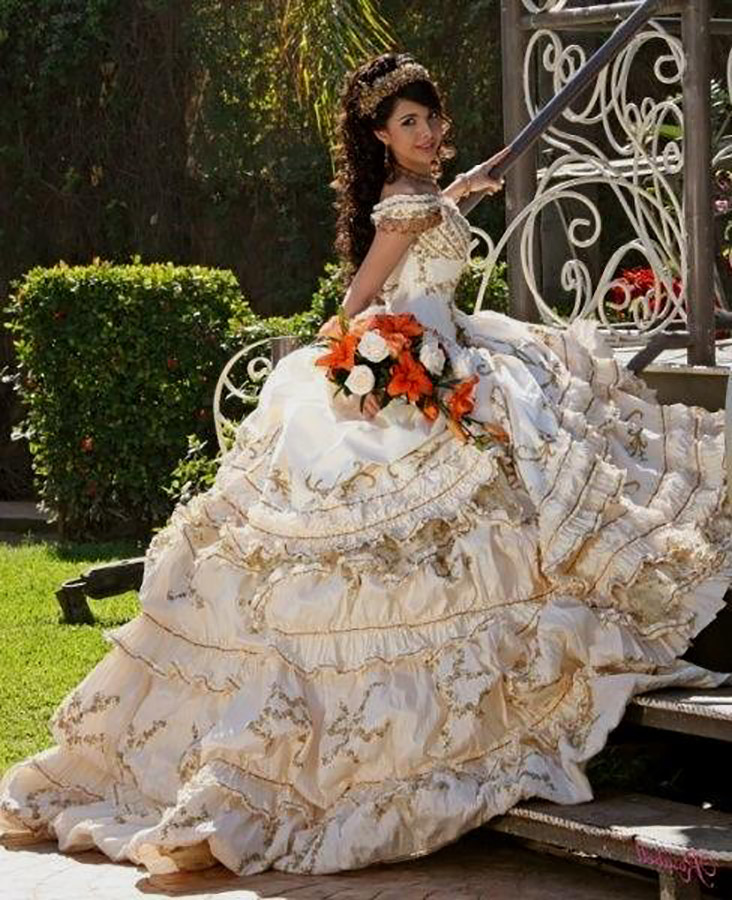
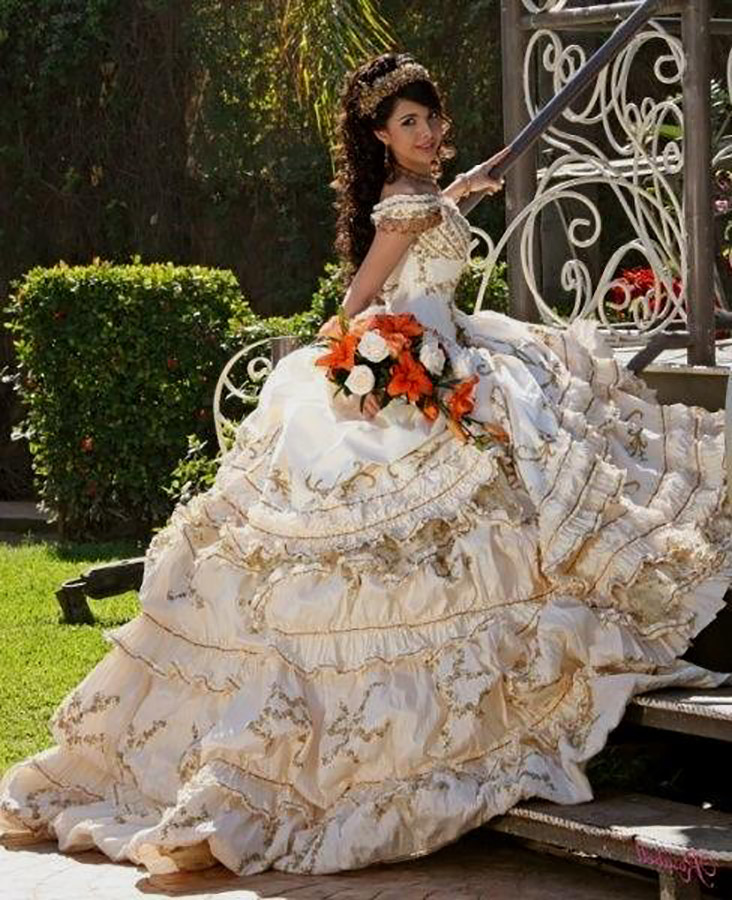
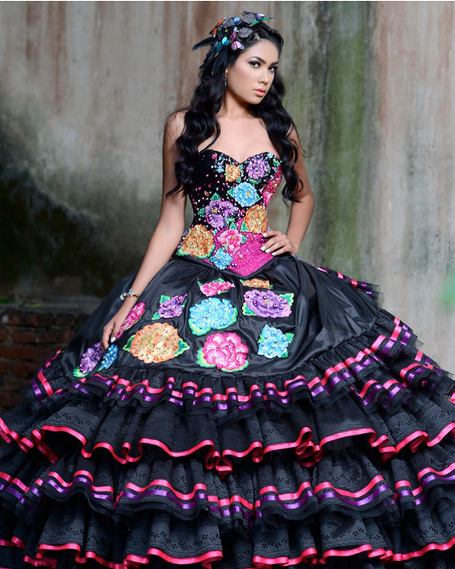

Traditional
This dress style stays true to tradition with beautiful ornate embroidery found in old colonial times, or in recent popularity the Charro "Mariachi" style. These dresses are found within traditional solid colors, accents and fabrics.
A Quincenera dress is a very important part of a Quinceañera celebration. Picking a Quinceañera dress is almost as important as picking a wedding dress. The dress design shows the fact that the Quinceañera girl is no longer a young girl, but is now a senorita (miss). The dress should call attention to the fact that that the girl is leaving childhood and entering womanhood, as this is the purpose of the Quinceañera's party. This dress is the key to making the birthday girl feel like the princess she is on this big day.
This dress style stays true to tradition with beautiful ornate embroidery found in old colonial times, or in recent popularity the Charro "Mariachi" style. These dresses are found within traditional solid colors, accents and fabrics.
This dress style is very popular even within prom goers, and usually opted as the go to style since High School girls will also go to prom. This dress can come in many different styles however it is still popular to find it in a high gown with many ruffles and practically in any color.
This dress style is generally eye pop-ing it’s the kind of dress you wear once! and to make a statement. These dress are often found to take on a bold pattern or statement. As seen within the image the dress it taking the "traditional" and taking it one step further by adding beading and a sweetheart neck line.
This dress style of dress is usually found in one solid color with many ball gown "Disney Princess" like silhouettes.